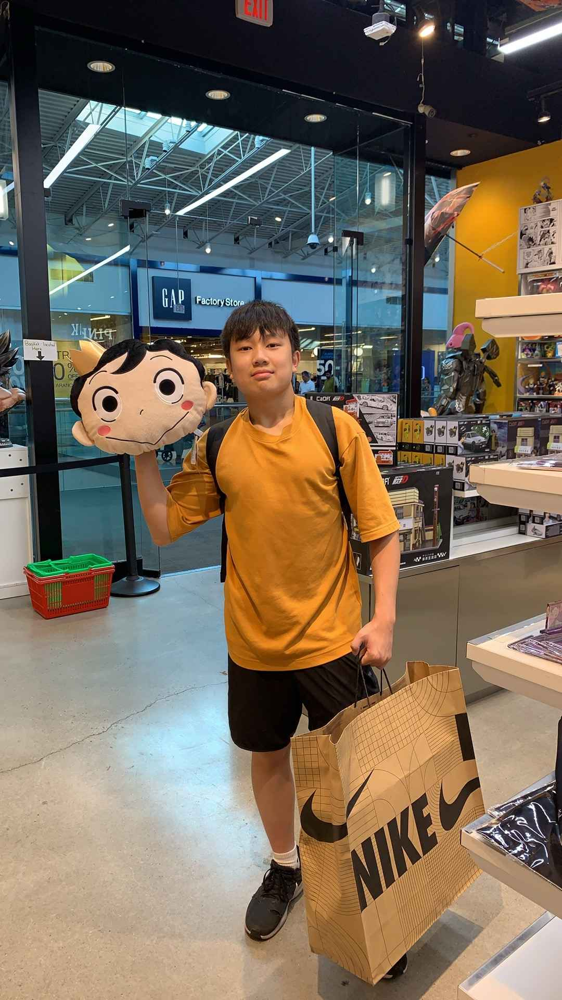

About Me
Hi! My name is Justin Li. I’m a Chinese American actively in the pursuit of actively trying to become the best version of myself, working towards bringing my manifestations to life. I value hard work, determination, and faith in oneself. With these pillars, anything is possible!

Education
I'm a rising senior at the Urban Assembly Academy of Government and Law (UAAGL), a high school situated in the Lower East Side area of Manhattan, New York City. I’ve always been a relatively quiet but studious student, prioritizing my studies and extracurriculars over leisurely activities.
Although my school is incredibly small and doesn’t necessarily offer many rigorous courses, I found that despite your circumstances, you have to make the best of the cards you’re dealt with, even if that means studying and self-learning subjects.
With the final stretch before eventually becoming a high school graduate and soon having to depart from my adolescence and transition to the daunting yet freeing realm of adulthood, there’s been a lot on my plate. Most prominently, college applications are about to open. As of now, I’ve been trying to continue with my career exploration through the accompanying process of accumulating as many experiences as possible.


Future Interests
As of now, I'm still in the career or better yet, the self exploration stage, trying to truly understand myself and my character traits/personality along with my strengths. Fortunately, throughout this process, I've honed in on two different fields that I'm torn between, either pre-med or something engineering related as reflected by my performance in certain subjects as well as my interest and joy for them.


Postsecondary Plan
Hopefully by the beginning of senior year, I'd have finally chosen my intended major and career of interest. Based on the conclusions, I will tailor my college exploration experience towards those with the respective and similar focus. However, I plan on going for at least 4 years and I'm definitely willing to push further for a PHD if I have to. Based on my current stats and interests, here is a rough list:
1. NYU
2. Cornell University
3. University of Rochester (U of R)
4. Stony Brook University (SBU)
5. Binghamton University